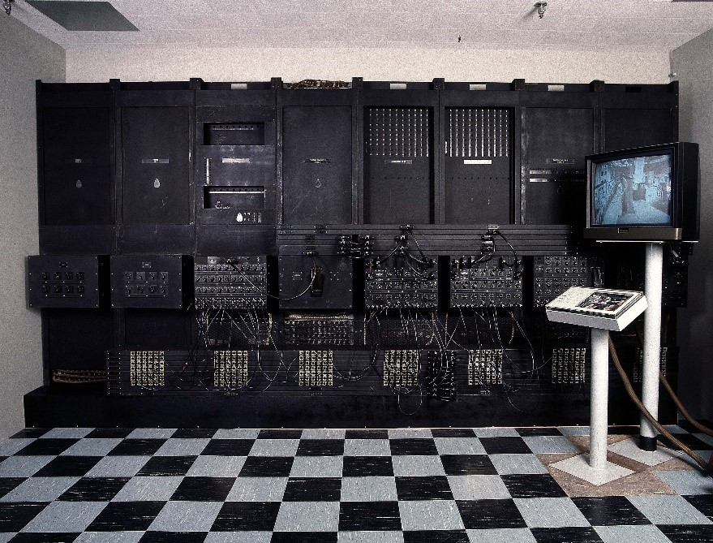

Современная цивилизация без компьютеров невозможна
-
Электронный компьютер ЭНИАК
Производство первого в мире электронного компьютера ЭНИАК, созданного в США в 1945 году, обошлось в 500 000 долларов. Монстр весом 20 тонн потреблял 174 кВт электроэнергии и содержал более 17 000 ламп. Данные для расчётов вводились в первый компьютер с перфокарт. Для того, чтобы рассчитать крайне упрощённые параметры взрыва водородной бомбы, потребовалось более миллиона перфокарт.
Весной 1950 года на ЭНИАКе попытались создать прогноз погоды на ближайшие сутки. На сортировку и распечатку перфокарт, а также на замену вышедших из строя ламп понадобилось столько времени, что расчёт прогноза на ближайшие 24 часа занял ровно 24 часа, то есть вместо круглосуточной суеты вокруг машины учёным достаточно было смотреть в окно. Тем не менее, работа над прогнозом погоды была признана успешной.